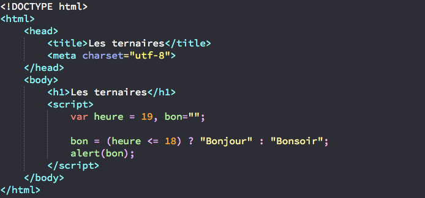
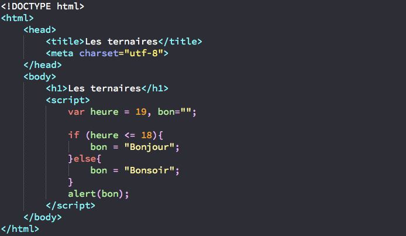

Les structures ternaires correspondent à une façon très raccourcie d’écrire ses conditions.
Comme les ternaires sont très « denses », certaines personnes en déconseillent l’usage car elles ne les trouvent pas forcément toujours compréhensibles.
Voici un premier exemple concret de ternaire :

Comme vous pouvez le remarquer, cette nouvelle écriture tranche radicalement avec tout ce que nous avons pu voir jusqu’à présent.
Dans le cas ci-dessus, nous commençons par déclarer deux variables heure et bon.
Le test va s’effectuer sur notre variable heure tandis que notre variable bon va nous servir à stocker le résultat de notre ternaire.
On teste donc si notre variable heure contient une valeur inférieure ou égale à 18 ou pas.
Si c’est le cas, on stocke dans la variable bon la chaîne de caractères située juste après le point d’interrogation et avant les deux points (c’est-à-dire « Bonjour »).
Dans le cas contraire, on stocke la valeur après les deux points (« Bonsoir ») dans notre variable bon.
Finalement, on affiche le contenu de notre variable bon.
L’utilisation d’une variable conteneur (ici bon) avec les ternaires n’est pas indispensable mais je vous le recommande fortement pour deux raisons : d’une part, en stockant le résultat de la ternaire dans une variable, vous pouvez vous resservir de ce résultat plus tard et d’autre part cela rend la ternaire un peu plus compréhensible.
Comme je l’ai précisé plus haut, certaines personnes déconseillent l’utilisation des ternaires car ils les jugent trop peu compréhensibles.
Personnellement, je n’ai aucun problème avec les ternaires à partir du moment où le code est bien commenté et où la ternaire est explicite.
Le vous laisse donc le choix de les utiliser ou pas, mais dans tous les cas faites l’effort de mémoriser la forme des ternaires au cas où vous en rencontriez dans le futur dans un code.
Notez tout de même que vous pourrez gagner beaucoup de temps si vous maitrisez les ternaires.
En effet, si nous devions réécrire notre ternaire ci-dessus de façon plus classique, c’est-à-dire avec un if...else, voilà ce que cela donnerait.
